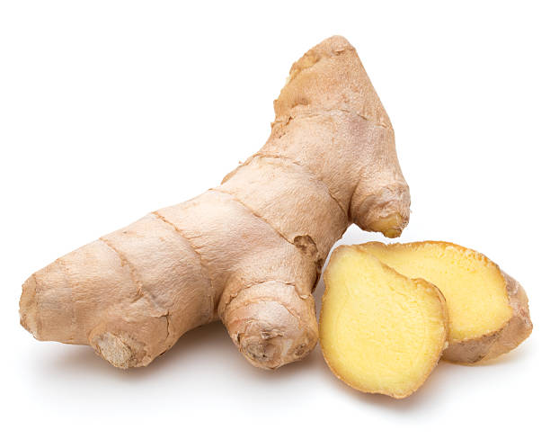

2 whole,250g
1 Medium finely diced

1 tablespoon

1 tablespoo fine strips/julienne

1-2 tablespoon,chopped

3 tablespoons chopped
3/4 cup/100ml
2-3 tablespoon

 Boil the brain in water for 10 minutes and discard the water. Remove top lining on the brain and chop it into small pieces.
Boil the brain in water for 10 minutes and discard the water. Remove top lining on the brain and chop it into small pieces.  Heat oil/ghee and fry the onion until light golden.
Heat oil/ghee and fry the onion until light golden.  Add the boiled brain and stir-fry continuously for about 5-7 minutes
Add the boiled brain and stir-fry continuously for about 5-7 minutes